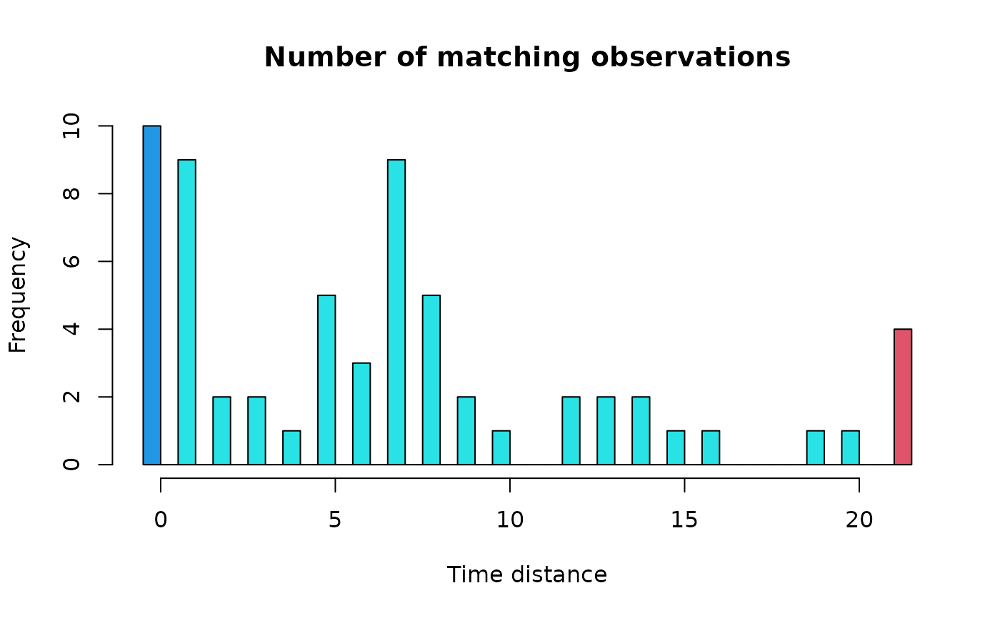

Adjust regulation parameters
regul.adj.RdCalculate and plot an histogram of the distances between interpolated observations in a regulated time series and closest observations in the initial irregular time series. This allows to optimize the tol parameter
Arguments
- x
a vector with times corresponding to the observations in the irregular initial time series
- xmin
the time corresponding to the first observation in the regular time series
- frequency
the frequency of observations in the regular time series
- deltat
the interval between two successive observations in the regular time series. This is the inverse of
frequency. Only one of both parameters need to be given. If both are provided,frequencysupersedesdeltat- tol
the tolerance in the difference between two matching observations (in the original irregular series and in the regulated series). If
tol=0both values must be strictly identical; a higher value fortolallows some fuzzy matching.tolmust be a round fraction ofdeltatand cannot be higher than it, otherwise, it is adjusted to the closest acceptable value. By default,tol=deltat- tol.type
the type of window to use for the time-tolerance:
"left","right","both"(by default) or"none". Iftol.type="left", correspondingxvalues are seeked in a window ]xregul-tol, xregul]. Iftol.type="right", they are seeked in the window [xregul, xregul+tol[. Iftol.type="both", then they are seeked in the window ]xregul-tol, xregul+tol]. If several observations are in this window, the closest one is used. Finally, iftol.type="none", then all observations in the regulated time series are interpolated (even if exactly matching observations exist!)- nclass
the number of classes to compute in the histogram. This is indicative, and will be adjusted by the algorithm to produce a nicely-formatted histogram. The default value is
nclass=50. It is acceptable in many cases, but if the histogram is not correct, try a larger value- col
the three colors to use to represent respectively the fist bar (exact coincidence), the middle bars (coincidence in a certain tolerance window) and the last bar (values always interpolated). By default,
col=c(4,5,2)- xlab
the label of the x-axis
- ylab
the label of the y-axis
- main
the main title of the graph
- plotit
if
plotit=TRUEthen the histogram is plotted. Otherwise, it is only calculated- ...
additional graph parameters for the histogram
Details
This function is complementary to regul.screen(). While the later look for the best combination of the number of observations, the interval between observations and the position of the first observation on the time-scale for the regular time series, regul.adj() look for the optimal value for tol, the tolerance window.
Value
A list with components:
- params
the parameters used for the regular time-scale
- match
the number of matching observations in the tolerance window
- exact.match
the number of exact matching observations
- match.counts
a vector with the number of matching observations for increasing values of
tol
See also
Examples
# This example follows the example for regul.screen()
# where we determined that xmin=9, deltat=21, n=63, with tol=1.05
# is a good choice to regulate the irregular time series in 'releve'
data(releve)
regul.adj(releve$Day, xmin=9, deltat=21)

#> $params
#> xmin n deltat tol
#> 9 63 21 21
#>
#> $match
#> [1] 59
#>
#> $exact.match
#> [1] 10
#>
#> $match.counts
#> 0 1 2 3 4 5 6 7 8 9 10 12 13 14 15 16 19 20 Inf
#> 10 19 21 23 24 29 32 41 46 48 49 51 53 55 56 57 58 59 63
#>
# The histogram indicates that it is not useful to increase tol
# more than 1.05, because few observations will be added
# except if we increase it to 5-7, but this value could be
# considered to be too large in comparison with deltat=22
# On the other hand, with tol <= 1, the number of matching
# observations will be almost divided by two!